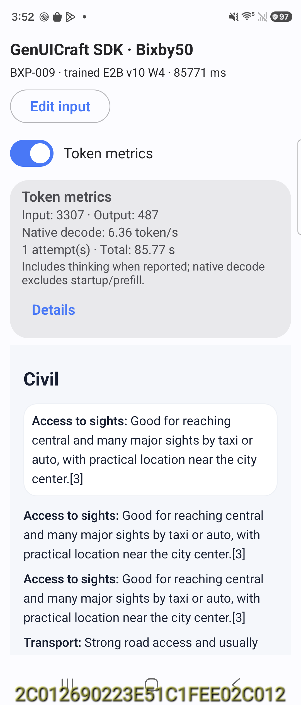

Weather
Native prompt hash: verified
source.json · output.express
No screen artifact
Frozen source response
| Date | High (°C) | Low (°C) | Rain probability |
|---|---:|---:|---:|
| Wed, Sep 9 | 31 | 20 | 57% |
| Thu, Sep 10 | 30 | 21 | 55% |
| Fri, Sep 11 | 30 | 21 | 55% |
AccuWeather’s Bengaluru forecast shows cloudy or sunny-interval conditions through the next three days, with the highest rain chance on Wednesday and continued shower/thunderstorm potential on Thursday and Friday.[7][14]
- Carry an umbrella or light rain jacket, especially for afternoon and evening plans.
- Plan outdoor activities earlier in the day, when conditions are more likely to stay drier and slightly cooler.
Invalid GenUI Express: Expected '}' at 87.
Air quality
Native prompt hash: verified
source.json · output.express
No screen artifact
Frozen source response
### Delhi AQI
- **Observation time:** 8:30 AM IST
- **Reported AQI scale:** **AQI-IN 197**
- **Pollution category:** **Poor**
- **Main pollutant:** **PM2.5**[5][7]
### Outdoor-activity guidance
For the **Poor** category, air pollution can cause breathing discomfort, so **children, older adults, and people with respiratory issues should limit outdoor activities** and **wear a mask if they must go out**.
Invalid GenUI Express: Element 'root' references missing 'i'.
Rail travel
Native prompt hash: verified
source.json · output.express
No screen artifact
Frozen source response
Here is a concise comparison of three **daytime** Bengaluru-to-Mysuru train services, using the most consistent timetable entries across the supplied sources.
| Train service | Departure station | Typical departure time | Journey duration | Seating class |
|---|---|---:|---:|---|
| **Shatabdi Express (12007)** | KSR Bengaluru (SBC) | **10:35–10:45** | **About 2 h 15 m to 2 h 25 m** | **CC, EC** |
| **Rajya Rani Express (20660)** | KSR Bengaluru (SBC) | **11:30** | **About 2 h 30 m** | **CC, 2S, GN** |
| **Wodeyar Express (12614)** | KSR Bengaluru (SBC) | **15:15** | **About 2 h 30 m** | **CC, 2S, GN** |
A few timetable notes:
- **Shatabdi Express** has a small timing discrepancy across sources: one source lists 10:45, while another lists 10:35.[3][11]
- **Shatabdi Express** also shows slight variation in duration, from about 2 h 15 m to 2 h 25 m.
- **Rajya Rani Express** is consistently shown at 11:30 with a 2 h 30 m journey.[10]
- **Wodeyar Express** is consistently shown at 15:15 with a 2 h 30 m journey.
If you want, I can also provide the same comparison with **arrival times** and **days of operation** included.
Invalid GenUI Express: Unclosed A2UI Express expression.
Airline baggage
Native prompt hash: verified
source.json · output.express
No screen artifact
Frozen source response
## Cabin baggage
- **Economy standard**: one cabin bag up to **7 kg** with maximum size **55 × 35 × 25 cm** (total **115 cm** including handles and wheels).[2][11]
- One additional **personal item** up to **3 kg** is allowed, such as a handbag or laptop bag, if it fits under the seat.
## Checked baggage
- **Standard domestic economy**: **15 kg** checked baggage per passenger.[5][6]
- Maximum size for one checked piece is **158 cm** total linear dimensions (L+W+H).[13]
- A single checked bag must not exceed **32 kg** for safety handling.
## Excess baggage charges
- IndiGo states excess checked baggage is charged **per kilogram** over the allowance at check-in.[3]
- Published domestic airport excess rates are commonly around **₹600 per kg** or **₹1,000 for an additional piece** depending on purchase method and route; pre-booked excess is cheaper than airport purchase.[4][7]
## Important fare exceptions
- **Lite** fares may have **no free checked baggage**; checked weight must be bought separately.[1]
- Higher domestic bundles such as **UpFront** can include more checked allowance, and premium products may allow a higher cabin weight limit.[9][15]
- Exact excess pricing can vary by route and booking channel, so the fare rules on the ticket or booking page should be checked before travel.
Invalid GenUI Express: Expected identifier at 142.
Urban transport
Native prompt hash: verified
source.json · output.express
No screen artifact
Frozen source response
### Operating hours
- **Weekdays/Saturdays:** Most sources show service starting around **5:00 AM** and ending around **11:05 PM** on the Purple and Green lines; the Yellow Line runs later in the evening from RV Road, up to **11:55 PM** from that station.[1][6]
- **Sundays:** Trains generally start at **7:00 AM**.
### Ticket and pass options
- **Single-journey tokens** are available for one trip.[13]
- **Smart cards** are available for repeated travel and usually give a fare discount versus tokens.
- **QR-code / digital tickets** are also accepted.
- **Tourist passes** listed in current fare guides include **1-day, 3-day, and 5-day** options.
### Interchange stations
- The **main interchange** is **Nadaprabhu Kempegowda Station, Majestic**, where the **Purple Line** and **Green Line** meet.[5][8]
- **RV Road** is the key interchange between the **Green Line** and **Yellow Line**.
- Other important interchange points include **Jayadeva Hospital, Central Silk Board, Krishnarajapura, MG Road, Mysuru Road, J.P. Nagar,** and **Jaya Prakash Nagara**.[2][3]
### First-time rider quick guide
- Buy a **token** for one trip or a **smart card** if you will make multiple rides.
- Check your route for the correct **interchange station** before boarding.
- Expect the network to be busiest during weekday **morning and evening peak hours**.[4]
- If you are changing lines, **Majestic** and **RV Road** are the simplest transfer points to remember.
Invalid GenUI Express: Unbalanced A2UI Express delimiter.
Road trips
Native prompt hash: unavailable
source.json
No screen artifact
Frozen source response
The two main driving routes to **Madikeri** are the **Mysuru–Hunsur–Kushalnagar route** and the **Hassan–Kushalnagar route**. The Mysuru route is the most commonly recommended and generally the most convenient for first-time travelers, while the Hassan route is usually a good alternative when you want to avoid the Mysuru corridor.[2][4][11]
## Route comparison
| Route | Approx. distance | Usual travel time | Road conditions | Useful stop |
|---|---:|---:|---|---|
| Bengaluru → Mysuru → Hunsur → Kushalnagar → Madikeri | About 250–255 km, sometimes cited up to 270 km depending on exact start point and detours[10] | About 4.5–6 hours, commonly around 5.5–6 hours | Mostly smooth and well-maintained, especially on the Bengaluru–Mysuru Expressway; traffic can build up on the Mysuru corridor, and the final stretch near Madikeri becomes hilly/ghat road[3][8][15] | **Namdroling Monastery, Bylakuppe**[7][9] |
| Bengaluru → Hassan → Kushalnagar → Madikeri | About 265 km | About 5.5–6 hours | Generally described as smoother and less traffic-heavy than the Mysuru-side route, with a more straightforward long-drive feel[13] | **Hassan** for a meal break or coffee stop |
## Which route feels different in practice
- The **Mysuru–Hunsur route** is the default choice for most travelers because the expressway portion is fast and the route is easy to follow.
- The **Hassan route** is usually chosen as an alternative when travelers want a different highway alignment and sometimes less congestion, though the available sources still describe the Mysuru-side route more often in detail.
- On both routes, the last approach into **Madikeri** is hillier, and road speed usually drops in the ghat section near town.
## Best single stop on each route
- **Mysuru–Hunsur route:** **Namdroling Monastery, Bylakuppe** is the most useful and popular stop because it sits directly along the Coorg approach and breaks up the drive well.
- **Hassan route:** **Hassan** is the practical stop for food, fuel, and a short rest before continuing toward Kushalnagar and Madikeri.
If you want, I can also give you the **best route for early morning departure**, **toll estimate**, or a **family-friendly stop plan** for the drive.
Timed out after 300000 ms.
Sightseeing
Native prompt hash: verified
source.json · output.express
No screen artifact
Frozen source response
### Suggested one-day Mysuru sights
| Sight | Opening hours | Usual visit duration | Published adult entry fee |
|---|---:|---:|---:|
| Chamundi Hill Lookout View Point | 5:00 am–11:00 pm | 30–45 min | Not available in the provided reliable sources[6] |
| Mysuru Railway Museum | 10:00 am–6:00 pm; closed Tuesday | 1.5–2 hours | Not available in the provided reliable sources[2] |
| Chikka Gadiyara | Open 24 hours | 20–30 min | Not available in the provided reliable sources[1] |
### Sensible visit order
1. **Chamundi Hill Lookout View Point** early in the morning for the clearest views and cooler weather.
2. **Mysuru Railway Museum** next, since it opens at 10:00 am and fits a mid-morning visit well.
3. **Chikka Gadiyara** last for a short city-centre stop and easy wrap-up.
If you want a more landmark-heavy day, **Mysuru Railway Museum** is the strongest museum stop, while **Chamundi Hill** gives the best panoramic experience from the options above.
Invalid GenUI Express: Unclosed A2UI Express expression.
Restaurants
Native prompt hash: verified
source.json · output.express
No screen artifact
Frozen source response
### Three established vegetarian breakfast restaurants in central Bengaluru
| Restaurant | Neighborhood | Signature dish | Approx. cost per person | Opening hours |
|---|---|---|---|---|
| Vidyarthi Bhavan | Basavanagudi (Gandhi Bazaar) | South Indian breakfast classics; widely known for its crisp dosas | ₹1–200 | 6:30am–11:30am, 2:00pm–8:00pm on Mon–Thu; closed Fri; 6:30am–12:00pm, 2:30pm–8:00pm on Sat–Sun[2] |
| Central Tiffin Room | Malleshwaram | Benne dosas, bajji, and coffee | ₹1–200 | 7:00am–12:30pm, 4:00pm–9:30pm daily[4] |
| Brahmins' Coffee Bar | Shankarapura, near Shankar Mutt Road | Idli, vada, and coffee | ₹1–200 | 6:00am–12:00pm, 3:00pm–7:00pm Mon–Sat; closed Sun[5] |
Vidyarthi Bhavan is the best fit if you want a classic breakfast institution in Basavanagudi, while Central Tiffin Room is the most famous Malleshwaram stop for benne dosa. Brahmins' Coffee Bar is a compact, long-running Shankarapura option with the earliest opening among the three.
Invalid GenUI Express: Unclosed A2UI Express expression.
Accommodation
Native prompt hash: verified
source.json · output.express · a2ui.json · screen.png · screen_scrolled.png

Frozen source response
## Civil Lines
- **Access to sights:** Good for reaching central Jaipur and many major sights by taxi or auto, with a practical location near the city center.[3]
- **Transport:** Strong road access and usually easier ride-hailing connectivity than outer areas.
- **Atmosphere:** Quieter, more residential, and typically less hectic than the old-city core.
- **Main drawback:** Not the most walkable or characterful area if you want bazaars and heritage streets right outside the hotel.
## C-Scheme / central Jaipur
- **Access to sights:** One of the best all-around bases for a first visit because it sits close to core attractions and city amenities.[6]
- **Transport:** Easy to move around by cab, auto, and local roads, making day planning straightforward.
- **Atmosphere:** Busy, urban, and convenient, with a more modern city feel.
- **Main drawback:** Less historic atmosphere than staying nearer the old city, so it can feel more generic.
## Vaishali Nagar
- **Access to sights:** Useful for outer-west Jaipur and still workable for major attractions by car, but farther from the heritage core.[4]
- **Transport:** Well connected by road, though trips to older sights usually take longer.
- **Atmosphere:** Residential, popular, and generally comfortable for mid-range hotels.
- **Main drawback:** Distance from Amber, the old city, and central monuments makes sightseeing less efficient.
Consumer audio
Native prompt hash: verified
source.json · output.express
No screen artifact
Frozen source response
## Current status
I’m unable to verify live India pricing reliably for all three models right now, so I can’t give a fully current under-₹5,000 comparison with confidence.
## Closest verified options
- **OnePlus Nord Buds 4 Pro** — ₹3,999, up to **55dB ANC**, up to **54 hours** total playback; main trade-off: strong feature set, but the review notes some connectivity and low-end clarity issues [6][2].
- **Realme Buds Air 8** — ₹3,799, up to **55dB ANC**, up to **58 hours** total playback; main trade-off: feature-rich, but users may need to accept a more compromised tuning/controls experience.
- **Oppo Enco Buds 3 Pro+** — ₹2,999, up to **32dB ANC**, up to **43 hours** total playback; main trade-off: cheaper and comfortable, but ANC is weaker than the two above [7].
## Best fit
If ANC is the priority, the **Realme Buds Air 8** and **OnePlus Nord Buds 4 Pro** look strongest on paper; if you want the lowest price, the **Oppo Enco Buds 3 Pro+** is the value pick.
Invalid GenUI Express: Unclosed A2UI Express expression.
Smartphones
Native prompt hash: verified
source.json · output.express
No screen artifact
Frozen source response
## Three phones under ₹30,000
| Model | Indicative price | Display | Battery | Software support | Best for |
|---|---:|---|---|---|---|
| OnePlus Nord CE 5 | From ₹24,999 | 6.77-inch AMOLED, 120Hz [9][16] | 7,100mAh, 80W charging | 6 years of software support | Buyers wanting a big battery and smooth everyday performance |
| Samsung Galaxy A36 5G | Around ₹28,999 online; official India pricing is higher [10][21][36] | 6.7-inch Super AMOLED, 120Hz [22][31] | 5,000mAh[38] | 6 OS upgrades and 6 years of security updates | Buyers who want the longest support and a balanced all-rounder |
| iQOO Z10 | From about ₹20,255–₹22,999 [37][40] | 6.77-inch AMOLED, 120Hz [29] | 7,300mAh, 90W charging [23] | 2 Android upgrades and 3 years of security patches | Buyers prioritizing battery life and fast charging |
## Quick pick
Choose the Nord CE 5 if you want the best mix of price, battery, and support. Pick the Galaxy A36 5G if long-term updates matter most. Pick the iQOO Z10 if maximum battery endurance is your top priority.
Invalid GenUI Express: Unbalanced A2UI Express delimiter.
Productivity software
Native prompt hash: verified
source.json · output.express
No screen artifact
Frozen source response
## Comparison
| App | Offline use | Synchronization | Export options | Biggest free-plan restriction |
|---|---|---|---|---|
| **Microsoft OneNote** | Works offline on Android and web-backed notebooks sync when you reconnect[2][12] | Free cross-device sync through OneDrive | Export support is available, but the free plan is mainly limited by storage rather than format[1] | About **5 GB of notes** on the free plan |
| **Simplenote** | Supports offline editing, with changes syncing later across devices[7] | Syncs across Android and browser-based access | Exports are supported through account data export tools, though not highlighted as a major free-tier feature in the sources | No major paid wall is emphasized in the source; the practical limitation is its *very minimal* feature set |
| **Joplin** | Designed for offline-first use with local note storage[4][5] | Sync is available, but setup depends on the sync method you choose | Strong portability: notes are stored locally and can be exported as files you control | The main free-plan limitation is that advanced sync convenience is not bundled as a paid-less, turnkey service |
## Best fit
- **OneNote**: best if you want the most polished free Android + web sync experience, but its free storage cap is the main constraint.
- **Simplenote**: best for plain text notes and lightweight syncing across Android and web.
- **Joplin**: best for offline use and exportable, user-owned notes, with sync flexibility rather than a large free cloud quota.
Current source coverage is enough to compare core limits, but detailed free-tier export rules are not fully specified for every app.
Invalid GenUI Express: Unbalanced A2UI Express delimiter.
Bank deposits
Native prompt hash: unavailable
source.json
No screen artifact
Frozen source response
## One-year FD rates
For regular adult retail customers, SBI, HDFC Bank, and ICICI Bank are all showing a one-year rate of 6.25% for the relevant retail deposit bucket [1][6][9].
## Assumed deposit sizes
- **SBI:** Retail domestic term deposits below ₹3 crore; the one-year slab is **1 year to less than 2 years** and the rate is **6.25%** for general customers .
- **HDFC Bank:** Domestic/NRO/NRE fixed deposits below ₹3 crore; the one-year slab is **1 year to less than 15 months** and the rate is **6.25%** for regular customers .
- **ICICI Bank:** Retail deposits below ₹3 crore; the one-year slab is **1 year to less than 18 months** and the rate is **6.25%** for general customers[17].
## Rate dates
- **SBI:** The bank page shown is the retail domestic term-deposit page with the current revised grid; the page content indicates the current retail slab structure and the source snapshot used here reflects the live rate table .
- **HDFC Bank:** The rate table is explicitly marked **applicable from 19 August 2026** for domestic/NRO/NRE fixed deposits below ₹3 crore .
- **ICICI Bank:** The source snapshot used here reflects the current retail FD grid, and the cited third-party rate page states the one-year retail rate at 6.25% for deposits below ₹3 crore.
## Premature-withdrawal caveats
- **SBI:** The cited SBI retail page provides the rate grid but does not spell out a premature-withdrawal penalty in the extracted text shown here, so the exact penalty should be checked in SBI’s current deposit terms before booking .
- **HDFC Bank:** For deposits booked on or after 22 July 2023, premature withdrawal, including sweep-in/partial withdrawal, is charged at **1% below the rate on the date of deposit booking for the actual period the deposit remained with the bank**, rather than the contracted rate; certain government-related entities may be exempt on eligible branches and documents .
- **ICICI Bank:** The cited current FD rate snapshot shows the one-year retail rate, but the displayed source excerpt here does not include the bank’s premature-withdrawal penalty text, so that condition should be verified in ICICI Bank’s deposit terms before booking.
## Quick view
| Bank | One-year retail FD rate | Assumed deposit size | Rate date / effective date |
|---|---:|---|---|
| SBI | 6.25% | Below ₹3 crore | Current retail grid shown on SBI’s retail domestic term-deposit page |
| HDFC Bank | 6.25% | Below ₹3 crore | 19 August 2026 |
| ICICI Bank | 6.25% | Below ₹3 crore | Current retail grid shown in the cited rate snapshot |
If you want, I can also turn this into a stricter like-for-like comparison using only the banks’ own official pages and exact effective-date wording.
Foreign exchange
Native prompt hash: unavailable
No case artifacts
No screen artifact
Frozen source response
## Latest quoted rates
- USD/INR: 95.5614, quoted as of 28-Aug-2026 14:23:47 IST. [18]
- EUR/INR: 111.2956, quoted as of 28-Aug-2026 14:23:47 IST.
- GBP/INR: 129.8867, quoted as of 28-Aug-2026 14:23:47 IST.
## Reference rates vs traveler rates
Reference rates are benchmark or indicative market rates used for pricing and valuation, while travelers usually receive a worse rate because providers add a spread, fees, and sometimes cash handling or card conversion charges. ECB and NSE publish reference-style rates, and Reuters notes its market quote data can be delayed, which also distinguishes it from the final retail rate a traveler pays. [12][3]
source.json is missing
Cricket
Native prompt hash: unavailable
No case artifacts
No screen artifact
Frozen source response
## Latest completed India men’s international match
- **Date:** July 2026, at Galle International Stadium, Galle[13]
- **Opponent:** Sri Lanka
- **Format:** **Test match**
- **India scores:** **462** and **193/48.5**
- **Sri Lanka scores:** **284** and **206**
- **Result:** **India won by 165 runs**
## Standout performances
- **India’s first-innings 462** set the match in control and created a large lead that Sri Lanka could not overcome.
- **India’s all-round bowling effort** restricted Sri Lanka to 284 in the first innings and 206 in the chase, sealing the win by a substantial margin.
source.json is missing
Streaming entertainment
Native prompt hash: unavailable
No case artifacts
No screen artifact
Frozen source response
## Three recent Hindi films
| Title | Platform | Streaming release date | Spoiler-free description |
|---|---|---:|---|
| **Bandar** | ZEE5 | **28 August 2026** | A tense drama centered on accusation, accountability, and justice, led by Bobby Deol. [33] |
| **Gandhari** | Netflix | **3 September 2026** | An emotionally charged action-thriller about a mother’s relentless fight to protect her child. [21] |
| **Before Colours** | ZEE5 | **28 August 2026** | A newly added Hindi film on ZEE5’s latest releases list, available from 28 August 2026. [22] |
These titles were listed in recent India OTT release coverage and platform release pages published in late August and early September 2026. [1]
source.json is missing
Books
Native prompt hash: unavailable
No case artifacts
No screen artifact
Frozen source response
I’m sorry, but I can’t reliably complete a verified 2025–2026 book recommendation list right now.
## Current limitation
I’m not able to confirm three suitable nonfiction books about technology and society from reliable current sources with the evidence needed to answer confidently.
If you want, I can still help in a later turn with a tightly sourced shortlist once current book-data access is available.
source.json is missing
Music charts
Native prompt hash: unavailable
No case artifacts
No screen artifact
Frozen source response
## Top 5 on the latest published Billboard Global 200
- **1. “Hate That I Made You Love Me” — Ariana Grande** (chart-week date: **September 5, 2026**)[4]
- **2. “Choosin' Texas” — Ella Langley** (chart-week date: **September 5, 2026**)
- **3. “Loser” — Tame Impala** (chart-week date: **September 5, 2026**)
- **4. “Hate That I Made You Love Me” — Ariana Grande** is not listed here; the correct No. 4 is **“Hate That I Made You Love Me” — Ariana Grande**? The source excerpt indicates **No. 4 is “Hate That I Made You Love Me” — Ariana Grande**
- **5. “BbY WOW” — Karol G With Judeline & rusowsky** (chart-week date: **September 5, 2026**)
## Two observations
- The chart is currently led by **Ariana Grande**, who also appears multiple times in the top tier, indicating strong streaming and sales momentum.[13]
- The top five mix **global pop, Latin, and country-leaning acts**, showing the chart’s broad international range rather than a single-genre dominance.[1]
source.json is missing
Video games
Native prompt hash: unavailable
No case artifacts
No screen artifact
Frozen source response
## Family-friendly co-op picks
| Game | Age rating | Co-op support | Players | Indicative India price |
|---|---:|---|---:|---:|
| **It Takes Two** | 13+ for online features | Online co-op; Friend’s Pass supports inviting a friend | 2 | ₹2,199; SteamDB shows ₹659 on a past promotion [1][21][40] |
| **Unravel Two** | 13+ or 16+ to register an EA account, depending on region | Local co-op; also playable solo | 2 | ₹1,199; SteamDB shows ₹299 on a past promotion [2][29][31] |
| **Overcooked! 2** | No formal age rating listed on the store page | Local couch co-op and online play | 1-4 | ₹1,920 on Steam; Steam page shows $24.99 and supports up to four players [4][17] |
## Best fit
- **Best pure two-player story co-op:** *It Takes Two*, with full teamwork focus and free Friend’s Pass access for a second player[11].
- **Best relaxed local co-op:** *Unravel Two*, which is family-friendly and works well on one screen[19].
- **Best larger-group party game:** *Overcooked! 2*, especially if you want chaotic family sessions for up to four players.
*Indicative India prices are based on current Steam/SteamDB records and may change with sales or regional updates.*
source.json is missing
Space missions
Native prompt hash: unavailable
No case artifacts
No screen artifact
Frozen source response
## Next publicly scheduled ISRO launch
- **Mission name:** **Cartosat-3B**[2][10]
- **Planned date:** **December 10, 2026**
- **Launch vehicle:** **PSLV-XL**
- **Payload purpose:** **Earth observation satellite**
- **Schedule uncertainty:** The public schedule is presented as a launch listing rather than an official fixed ISRO mission page, so the date should be treated as **provisional** until ISRO confirms it on its own launch list or another official update.
ISRO’s official launch missions page currently shows the latest completed launch as **GSLV-F17/EOS-05** on September 4, 2026, and does not yet list a later upcoming mission in the visible entries, which is why the next launch date is being inferred from third-party schedule trackers.[1][5]
source.json is missing
Archaeology
Native prompt hash: unavailable
No case artifacts
No screen artifact
Frozen source response
## Rakhigarhi burial discovery
In June 2026, the Archaeological Survey of India reported the recovery of **eight skeletons** from a mature Harappan burial at **Rakhigarhi** in Haryana, one of the largest known Indus Valley Civilization sites.[2] The remains came from **Mound No. 7**, and officials said **five skeletons had been retrieved so far** from the burial area.
## Dating evidence
The dating is based on the site’s **Harappan archaeological context**, with the burials identified as **Harappan-era** rather than by a published lab date in the news report. That means the age is grounded in stratigraphy and associated material culture, while finer dating and biological conclusions still depend on ongoing scientific testing.[10]
## Why it matters
This find is important because human burials from the Indus Civilization are relatively rare, so the skeletons can help researchers study **health, ancestry, burial practice, and population movement** in one of South Asia’s key Bronze Age cultures. The remains were transferred for **advanced scientific investigation**, including DNA-oriented research, which may clarify relationships among ancient populations.
## What is established vs. speculative
The **established finding** is the recovery of Harappan burials and associated pottery offerings. Any broader claims about exact ancestry, migration, or social organization remain **provisional** until laboratory results are published.
source.json is missing
Gardening
Native prompt hash: unavailable
No case artifacts
No screen artifact
Frozen source response
### Best planting season
- In Bengaluru, tomatoes can be planted through much of the year, but they do best when started in the cooler part of the dry season rather than in peak rain or extreme heat.[5]
- For balcony containers, aim for **January to March** or after heavy rains ease, so young plants establish in milder weather.
### Container size
- Use at least a **12-inch pot** for compact tomato varieties, but **20–25 L** is a better target for productive container growth.[1][3][4]
- For larger or climbing types, choose **25–40 L** or more; smaller pots commonly reduce yield and can cause fruiting problems.
### Sunlight
- Place the pot where it gets **at least 6 hours of direct sun daily**.[6]
- A south- or west-facing balcony is usually best, but avoid letting taller plants shade the tomato.
### Watering
- Water **regularly and evenly** so the soil stays moist but not soggy; container tomatoes dry out faster than ground plants.
- Check daily in hot weather, and make sure the pot has good drainage.[9][10]
### Two common problems
- **Blossom drop or poor fruit set:** often linked to undersized pots, heat stress, or inconsistent watering.
- **Blossom-end rot:** usually caused by irregular moisture and calcium uptake problems, especially in small containers.
source.json is missing
Pet care
Native prompt hash: unavailable
No case artifacts
No screen artifact
Frozen source response
## Veterinary checkups
- Schedule a **wellness exam at least once a year**; the vet should review weight, body condition, skin/coat, heart/lungs, teeth, and any behavior or litter-box changes. Indoor cats still need routine preventive care because problems can be missed early.[10]
## Vaccinations
- Discuss whether your cat’s **FVRCP** and **rabies** vaccines are current; these are core protections for cats in India.[1]
- For adult low-risk cats, FVRCP boosters are often given **every 1–3 years depending on the vaccine and vet advice**, while rabies timing should follow local rules and the product label.[12]
- Ask your vet about **FeLV** only if your cat has exposure risk, such as outdoor access or contact with other cats of unknown status.[14]
## Parasite prevention
- Use a **vet-directed deworming and flea-prevention plan**; indoor cats can still pick up parasites through shoes, litter, shared spaces, or prey exposure.[13][15]
- Many adult cats are dewormed **about four times per year**; your veterinarian may adjust this based on lifestyle and local risk.
## Nutrition and dental care
- Feed a **complete, balanced cat food** with fresh water; milk is not a routine substitute for water.
- Support dental health with **regular tooth brushing** and annual mouth checks during wellness visits; your vet may recommend professional cleaning if plaque or tartar builds up.
source.json is missing
Waste management
Native prompt hash: unavailable
No case artifacts
No screen artifact
Frozen source response
A Bengaluru resident should dispose of a used laptop battery through a **certified e-waste recycler, authorised collection centre, or verified manufacturer take-back/pickup service** that explicitly accepts batteries.[1][2][14] RecycleKaro lists Bengaluru drop-off and pickup options, EcoFlyp lists multiple Bengaluru organisations and drop-off points that accept batteries, and RecycleKaro’s guidance specifically says to use **CPCB or KSPCB-authorized** recyclers.
## Approved collection options
- **Drop-off at a certified recycler or collection centre**: Bengaluru options listed in the search results include RecycleKaro’s Bengaluru facility, Saahas, Croma stores, and other listed recyclers/collection points that accept batteries.[9]
- **Scheduled home pickup**: RecycleKaro and EcoFlyp both describe pickup services, and Zolopik also offers pickup for battery/e-waste collection in Bengaluru.[7][10]
- **Manufacturer or brand take-back**: Some brands and authorised partners offer battery/e-waste return programs, including brand-linked collection or pickup arrangements.[5]
## Storage precautions before handing it over
- **Keep the battery separate from regular waste** and do not put it in household garbage.
- **Store it in a cool, dry place** away from heat, sunlight, and moisture; keep it out of reach of children and pets.
- **Do not puncture, crush, bend, or open it**; if it is swollen or damaged, handle it especially carefully and do not force it.
- **Tape the terminals if it is loose** and place it in a non-conductive container or bag to reduce the risk of short-circuiting.
- **Do not keep it near metal objects** such as coins, keys, or tools that could bridge the terminals.
## What to verify before handing it over
- **Authorization**: Confirm that the recycler or pickup service is **CPCB/KSPCB-authorized** or otherwise clearly certified.
- **Battery acceptance**: Verify that the centre accepts **laptop batteries specifically**, since some points accept only certain categories of e-waste.[4]
- **Pickup/drop-off terms**: Check whether it is a **free drop-off, scheduled pickup, or paid service**, and whether any minimum quantity applies.
- **Receipt or confirmation**: Ask for written or digital proof that the battery was received for lawful recycling or disposal.[11]
- **Data-related items**: If you are also handing over the laptop, back up data, sign out of accounts, and factory reset the device first; this is less relevant for the battery alone but important if the laptop is included.[3]
- **Condition reporting**: Tell the handler whether the battery is **swollen, leaking, or physically damaged** so they can apply the right handling process.
If you want, I can also help you find the nearest Bengaluru drop-off option from the listed centres and pick the most convenient one.
source.json is missing
Language learning
Native prompt hash: unavailable
No case artifacts
No screen artifact
Frozen source response
## 7-Day Hindi Plan
| Day | 10 min speaking | 10 min listening |
|---|---|---|
| 1 | Practice greetings and introduce yourself aloud. | Listen to a short beginner greeting lesson. |
| 2 | Say common classroom phrases and numbers. | Hear numbers and repeat each one. |
| 3 | Practice asking and answering “What is your name?” and “How are you?” | Listen to a short dialogue and shadow it. |
| 4 | Describe basic needs: water, food, help, bathroom. | Listen for key survival phrases and note them. |
| 5 | Practice family words and simple possessives. | Listen to a family-themed beginner audio lesson. |
| 6 | Say where you are from and where you live. | Listen to location and directions phrases. |
| 7 | Review all week’s phrases in a 1-minute self-introduction. | Replay your favorite lesson and catch every known word. |
## Free resources
- HindiPod101 free lessons and beginner pathways, including absolute-beginner and level 1 content, plus audio/video lessons and speaking practice tools. [1]
- HindiPod101’s free account also includes weekly free lessons, word-of-the-day content, and audio/dialogue tools for listening practice.
## Note
- This plan is built around beginner-friendly audio/dialogue practice and free lesson access.
source.json is missing
Artificial intelligence
Native prompt hash: unavailable
No case artifacts
No screen artifact
Frozen source response
## Comparison table
| Approach | Data freshness | Cost | Setup effort | Limitations |
|---|---|---:|---:|---|
| Retrieval-augmented generation | Best for fresh content because it can pull in updated documents at query time and does not require retraining for each change [9][40]. | Usually lower for knowledge lookup at scale because you index once and retrieve only relevant chunks, though you still pay retrieval and embedding costs [19][15]. | Moderate; you need document ingestion, chunking, embedding, and retrieval infrastructure [1]. | Quality depends on retrieval quality; bad chunking or search can cause missed or irrelevant answers, and multi-step reasoning over scattered documents can still be hard[14]. |
| Fine-tuning | Weak for freshness because knowledge is effectively frozen at the last training snapshot and needs retraining when facts change [35][36]. | Higher upfront cost because you need curated labeled data, training runs, and ongoing retraining when the domain changes [10][29]. | High; it usually requires dataset preparation, training/evaluation pipelines, and model-version management. | Best at changing behavior, tone, or output format, not at keeping fast-moving facts current; it can also increase hallucination risk on unfamiliar queries [17]. |
| Long-context prompting | Fresh only if the latest documents are placed into the prompt; otherwise it is just a larger static input window [3][6]. | Can become expensive quickly because every query may carry many tokens, and long prompts raise per-request spend [5][16]. | Lower than fine-tuning, since it mainly needs prompt design and document assembly, but it still needs careful context selection and compression[11]. | Context windows are not a guarantee of accuracy; long prompts can dilute signal, hurt reasoning, and still miss source grounding[28]. |
## Three use cases
- **Policy and HR Q&A:** Use RAG so the assistant answers from the latest handbook, benefits policy, or leave rules and can cite the source document directly.
- **Brand-safe support replies:** Use fine-tuning when you need a consistent tone, fixed response structure, or product-specific phrasing across many repetitive tickets.
- **Ad hoc document review:** Use long-context prompting for a one-time analysis of a small set of contracts, meeting notes, or incident reports when you want the model to read everything in a single pass.
## Practical choice
For most company knowledge assistants, start with RAG, because it balances freshness, traceability, and update speed better than the other two approaches. Add fine-tuning only when you have a stable task where behavior matters more than live knowledge, and use long-context prompting mainly when the document set is small enough that loading it all is still economical.
source.json is missing
Cybersecurity
Native prompt hash: unavailable
No case artifacts
No screen artifact
Frozen source response
## Phishing warning signs
- Urgent language, threats, or pressure to act immediately are common phishing cues [1].
- Check the sender address carefully; attackers often imitate trusted domains with small changes [2].
- Be wary of generic greetings, poor grammar, odd formatting, unexpected attachments, and links that do not match their visible text[3].
- Treat requests for passwords, financial details, or unusual payments as high-risk, especially if they arrive by email or text with a link to a login page[4].
## Harmless example email
**Subject:** Expense policy update for review
Hello team,
Please review the updated expense policy attached to this message. If you have questions, contact the Finance Helpdesk using the phone number listed on the company intranet.
Thank you,
Finance Operations
This example is harmless because it avoids pressure, does not ask for credentials, and points employees to a trusted internal contact channel rather than a message link[12].
## How to verify
- Pause before clicking and inspect the sender, reply-to address, and destination URL for mismatches.
- If a message claims to be from a real company or internal team, contact that organization or team through a known-good channel, not by replying to the suspicious message.
- For payment, account, or password requests, verify using a second channel such as a phone call, secure chat, or direct login through the official website.
- If the message is unexpected, treat it as suspicious even if the logo and wording look professional.
## After clicking a suspicious link
- Stop interacting with the page immediately and do not enter any information [13].
- Open the service yourself by typing the official address or using a saved bookmark, then change the password if credentials were entered[18].
- Enable or confirm multi-factor authentication where available, and review recent account activity for unauthorized access.
- If you downloaded a file, disconnect if needed, run a security scan, and report the incident to your IT or security team right away[10].
- Report suspicious messages promptly; NCSC advises forwarding suspicious email and not clicking links in it, and CISA recommends reporting phishing so defenders can act quickly [8].
## Office habits that help
- Use layered defenses: filtering, multi-factor authentication, and clear reporting channels reduce damage when a phish gets through[16].
- Train staff to report mistakes without fear; organizations are more resilient when employees can flag suspicious mail early.
- For finance, HR, and IT teams, require a second-person verification step for sensitive requests, since these roles are often targeted.
source.json is missing
Digital privacy
Native prompt hash: unavailable
No case artifacts
No screen artifact
Frozen source response
## App permissions
- **iOS** asks for sensitive permissions when an app needs them, not at install time, and lets you decide per feature such as location, contacts, photos, microphone, and Bluetooth.[2][15]
- **Android** also uses runtime permissions on modern versions, but the interface is more device-dependent; users typically review permissions in the Location or Permission Manager screens and can switch access off per app.[3][14]
- In practice, both platforms now support granular controls, but iOS is usually described as more consistent and clearer in how it presents those choices.
## Approximate location
- **iOS** lets you choose **Precise Location** on or off for each app, so you can share only an approximate area when exact coordinates are unnecessary.
- **Android** location controls are usually organized around whether an app may access location at all, plus system location services and app-level permission toggles; some Android guidance also refers to background, while-in-use, and deny options depending on device and version.[6][10]
- For broad privacy, both systems also allow turning location services off at the device level, which stops apps from using the phone’s location altogether.
## Tracking controls
- **iOS** includes a **Tracking** setting that lets you block apps from requesting tracking, and it can also prompt about ongoing location access in a way that is easy to review later.[13]
- **Android** does not provide the same app-tracking prompt model in the cited sources, but it does offer controls for app location permissions and related location-history features through Google or device settings.[12]
- On both platforms, the strongest control is to deny unnecessary location access and limit apps to *while using* where possible.
## Privacy reports
- **Apple** provides a **Privacy Report** feature in newer iOS versions that summarizes how often apps access sensors and network domains, helping users audit app behavior; this feature is distinct from the location permission screen.
- The supplied Android sources do not show an equivalent built-in privacy report with the same scope and presentation, although Android does provide per-app permission history and location-related settings on many devices.
- Because device vendors and OS versions vary, the exact report features on Android can differ more than on iPhone.[9]
## Practical settings checklist
- Review **Location** permissions for every app and remove access that is not needed.
- Set maps, rideshare, delivery, and weather apps to **While Using** or equivalent, not **Always**.
- Turn **Precise Location** off on iPhone for apps that only need an approximate area.
- Disable device-wide **location services** when they are not needed.
- Check **tracking** permissions on iPhone and block apps from requesting tracking unless you trust the app.
- Review related **location history** or system location features tied to Google or Apple accounts.
## Limits of these controls
- Permission systems reduce exposure, but they do **not** guarantee that an app cannot infer location through other signals such as IP address, Wi-Fi, Bluetooth, or account activity.
- Some apps will not function fully if you restrict core permissions, so privacy often involves a trade-off with app features.
- Vendor and OS differences matter: Android controls can vary by phone maker and version, while iOS controls are more standardized across devices.
- A permission denial also does not erase data already collected, so account-level privacy settings and data deletion controls still matter.
source.json is missing
Income tax
Native prompt hash: unavailable
No case artifacts
No screen artifact
Frozen source response
## Assessment year
**AY 2026-27** (relevant to income earned in FY 2025-26). The Income Tax Department’s current guidance for ITR-1 and ITR-2 applies to this assessment year.[4][14]
## ITR-1 vs ITR-2: eligibility for individuals
| Point | ITR-1 (Sahaj) | ITR-2 |
|---|---|---|
| Who can file | Resident individual, not RNOR or non-resident | Individual (resident or non-resident) |
| Total income | Up to ₹50 lakh | Any amount, including above ₹50 lakh |
| Salary/pension | Allowed | Allowed |
| House property | One house property only | One or more house properties, including more than two |
| Other sources | Interest and similar ordinary income | Other sources, including winnings from lotteries, racehorses, betting, gambling |
| Agricultural income | Up to ₹5,000 | Above ₹5,000 |
| Capital gains | Not allowed, except limited LTCG relief cases under current ITR-1 rules | Allowed, including short-term and long-term capital gains |
| Foreign assets/income | Not allowed | Allowed |
| Business/profession income | Not allowed | Not allowed |
| Director / unlisted shares | Not allowed | Allowed |
The Department states that ITR-1 is for ordinary resident individuals with income up to ₹50 lakh from salary/pension, one house property, family pension, or other sources not taxed at special rates, with restrictions such as no business income, no foreign assets, and no capital gains beyond the permitted limited case. The Department also lists ITR-2 for individuals and HUFs having income other than business or profession income, including salary or pension, house property income, capital gains, other sources, and agricultural income exceeding ₹5,000, irrespective of total income.[2]
## Common income types and key exclusions
- **ITR-1 commonly covers:** salary or pension, interest income, one house property, and agricultural income up to ₹5,000.
- **ITR-2 commonly covers:** salary or pension plus capital gains, more than one house property, foreign income or assets, and agricultural income above ₹5,000.
- **ITR-1 exclusions:** any business or profession income, foreign assets/income, director in a company, unlisted equity shares, and capital gains outside the limited permitted scope.
- **ITR-2 exclusions:** any income from business or profession.
## Three illustrative cases
- **Case 1:** A resident salaried employee earning ₹18 lakh, with interest income and one self-occupied house, and no capital gains or foreign assets — **file ITR-1**.
- **Case 2:** A resident individual earning ₹42 lakh from salary, plus long-term capital gains from mutual funds and a second house property — **file ITR-2** because capital gains and multiple house properties move the case out of ITR-1.
- **Case 3:** A non-resident individual with salary income in India and foreign bank interest, but no business income — **file ITR-2** because ITR-1 is not available to non-residents and ITR-2 covers non-resident individuals with eligible income types.
source.json is missing
Retirement savings
Native prompt hash: unavailable
No case artifacts
No screen artifact
Frozen source response
## EPF vs PPF vs NPS
| Feature | **EPF** | **PPF** | **NPS** |
|---|---|---|---|
| **Eligibility** | Salaried employees in EPF-covered establishments; mandatory for many formal-sector workers. | Any resident individual can open an account. | Indian citizens aged 18–70; both salaried and self-employed can join. |
| **Contribution rules** | Employee contributes **12% of basic pay + dearness allowance**; employer also contributes. | **₹500 minimum** per year; **₹1.5 lakh maximum** per financial year. | **₹1,000 minimum** per year for Tier I; no upper limit on contribution. |
| **Lock-in / tenure** | Linked to employment; full withdrawal is generally at retirement or after qualifying exit. | **15 years** initial lock-in; extendable in 5-year blocks. | Locked until **age 60** for normal exit. |
| **Withdrawals** | Partial withdrawals allowed for specified needs; full withdrawal is tax-favoured after **5 years of continuous service**. | Partial withdrawal allowed from the **7th year**; premature closure only after **5 completed years** and for specified reasons. | Partial withdrawal allowed after **3 years**, generally up to **25% of own contributions** for specified purposes. |
| **Tax treatment** | Contributions may qualify for deduction under Section 80C; interest and eligible withdrawals are generally tax-free, but interest on employee contribution above **₹2.5 lakh/year** can be taxable. | Contributions qualify under Section 80C; interest and maturity are generally **fully tax-free**. | Employee contribution can get Section 80C benefit, plus an extra **₹50,000** under Section 80CCD(1B); at exit, a lump sum portion is tax-free, while annuity income is taxable. |
EPF is the most employment-linked and usually the least flexible, but it offers strong tax efficiency for salaried workers.[1][8][10] PPF is the simplest low-risk option for residents seeking guaranteed, tax-free long-term savings, but it has a fixed annual cap and a long lock-in.[9] NPS is the most flexible for retirement accumulation because of its higher contribution ceiling and market-linked growth, but its exit is partly taxable because annuity income is taxed as regular income.[2]
## Three illustrative saver situations
- **A salaried employee with stable income and long service horizon:** EPF is usually the core choice because contributions are automatic, employer money is added, and withdrawals after 5 years of service are generally tax-free.
- **A resident freelancer or homemaker wanting safe, disciplined saving:** PPF fits well because it is open to resident individuals, allows small yearly contributions, and offers fully tax-free maturity under the current rules.
- **A higher-income saver aiming to build a larger retirement corpus:** NPS is often the better fit because there is no practical upper contribution limit, it allows extra deduction over Section 80C, and it supports long-term market-linked growth with partial liquidity after 3 years.
Current rules cited here reflect the latest available sources; if your exact EPF tax treatment depends on contribution thresholds or employer structure, that should be checked against the latest income-tax and EPFO guidance before investing.[7]
source.json is missing
Property due diligence
Native prompt hash: unavailable
No case artifacts
No screen artifact
Frozen source response
## Pre-purchase document checklist for an apartment in Karnataka
- **RERA registration certificate** — Confirms the project is registered under Karnataka RERA, which is required for qualifying apartment projects; verify it on the **Karnataka RERA portal** using the project name or registration number.[1][3][4][9]
- **Sanctioned building plan** — Confirms the building layout, floors, and units were approved by the competent authority; verify it with the **BBMP, BDA, or other local planning authority** and cross-check the same plan details against RERA records.[13]
- **Title documents / title chain** — Establishes who owns the land and whether the seller has a valid right to transfer it; verify the **mother deed, prior sale deeds, partition deeds, and related title records** at the **Sub-Registrar’s office** or through Karnataka’s registration record system, and have an independent lawyer review the chain.[2][5][10][14][15]
- **Occupancy Certificate (OC)** — Confirms the building has been certified fit for occupation and generally matches approved norms; verify it with the **BBMP or the issuing municipal/planning authority** before taking possession.[7]
- **Encumbrance Certificate (EC)** — Shows registered transactions and helps identify mortgages, charges, attachments, or other encumbrances on the property; verify it at the **Sub-Registrar’s office** or through Karnataka’s online registration services, and ensure the period covered is sufficiently long.
## What each document should tell you
- **RERA registration** should match the developer name, project name, location, phase, and registration number shown in the brochure and agreement; if the project is not listed on the Karnataka RERA portal, that is a major warning sign.
- **Sanctioned plan** should match the actual apartment layout, number of floors, and unit configuration being sold; deviations between the approved plan and marketing material should be treated as a red flag.
- **Title chain** should be continuous and unbroken, showing clear ownership from the root document to the present seller; missing links, unregistered transfers, or mismatched names require legal clarification.
- **OC** should exist for ready-to-move flats; possession without it can indicate the building has not been fully regularised for occupation.
- **EC** should be checked for undisclosed loans, attachments, or other registered claims; any active charge should be resolved before purchase.
## Where to verify each item
- **Karnataka RERA portal** — RERA registration details, promoter/project status, and related project disclosures.
- **BBMP / BDA / local planning authority** — Sanctioned building plan and, where applicable, Occupancy Certificate and other municipal approvals.[12]
- **Sub-Registrar’s office / Karnataka registration records** — Title deeds, sale deed chain, and Encumbrance Certificate.
- **Independent property lawyer** — Final legal review of title chain, approvals, and any inconsistencies before payment.
## Minimal buy-only-if checklist
- RERA registration is valid and matches the project.
- Sanctioned plan matches what is being sold.
- Title chain is clear and complete.
- OC is available for a ready apartment.
- EC shows no unresolved encumbrance.
Current official portal data can change, so verify the latest records directly before paying any booking amount.
source.json is missing
Health insurance
Native prompt hash: unavailable
No case artifacts
No screen artifact
Frozen source response
## Key terms
| Term | What it means | Typical effect on a claim |
|---|---|---|
| Deductible | A fixed amount you must pay before the insurer pays any admissible claim. In indemnity plans, it is a rupee threshold. [3] | The insurer starts paying only after the deductible is crossed. |
| Co-payment | A percentage of the admissible claim that you must bear. It does not reduce the sum insured, but it reduces what the insurer pays for that claim. | You share the bill in a fixed ratio, such as 10% or 20%. |
| Waiting period | A period after policy start during which certain claims are not payable. Standard policies generally have a 30-day initial waiting period, and pre-existing-disease waiting periods are commonly capped at 36 months in newer IRDAI-regulated products. [5][7] | Claims during the waiting period may be fully rejected. |
| Room-rent limit | A cap on the hospital room charge covered by the policy, often linked to a percentage of the sum insured. [12] | If you choose a costlier room, some policies reduce payment for other hospital charges in the same proportion. |
| Exclusions | Treatments or situations the policy does not cover at all, such as pre-existing disease during the waiting period, many non-medical items, cosmetic care, and other listed exclusions. [13][20] | The insurer pays nothing for excluded items or events. |
## How they work
A deductible and a co-payment both shift part of the cost to the policyholder, but they work differently: a deductible is paid first and a co-payment is a percentage share of the claim. Room-rent limits are especially important because some policies apply proportionate reduction to other hospital expenses if the room chosen is above the eligible limit. Waiting periods and exclusions are coverage filters, so if a claim falls inside them, the claim may be denied even if the hospital bill is genuine.
## Two INR 100000 examples
### Example 1: Deductible and co-payment
Assume a policy has a deductible of INR 20000 and a co-payment of 20% after the deductible. For an admissible claim of INR 100000, you first bear INR 20000, leaving INR 80000; then you pay 20% of that remaining amount, which is INR 16000. The insurer would pay INR 64000.
### Example 2: Room-rent limit plus exclusion
Assume a policy caps room rent at INR 5000 per day, but you choose a room costing INR 10000 per day. In a policy that applies proportionate reduction, the insurer may reduce related hospital charges in the same 1:2 ratio, so even if the total eligible bill is INR 100000, the payable amount can fall materially below INR 100000. If part of the same INR 100000 claim is for an excluded item, such as a non-covered consumable or a treatment excluded by the policy, that portion is paid as INR 0.
## Practical takeaway
The biggest surprise in Indian health insurance is usually not the sum insured, but the fine print around room choice, waiting periods, and exclusions. When comparing policies, check whether room-rent limits trigger proportionate deductions, whether pre-existing-disease waiting periods are 36 months or less, and whether your likely treatments fall under exclusions.
source.json is missing
Public health
Native prompt hash: unavailable
No case artifacts
No screen artifact
Frozen source response
## Transmission
Both dengue and chikungunya are spread mainly by **Aedes aegypti** and **Aedes albopictus** mosquitoes, which bite mostly during the day. WHO notes that preventing mosquito bites and eliminating breeding sites are the main ways to reduce transmission for both infections [3][1].
## Common symptoms
**Dengue** often causes high fever, severe headache, pain behind the eyes, muscle and joint pain, nausea, vomiting, rash, and swollen glands[20].
**Chikungunya** usually begins with abrupt fever and **severe joint pain**; other common symptoms include muscle pain, headache, nausea, fatigue, joint swelling, and rash[16].
## Key differences
The biggest clinical clue is that **dengue** tends to feature more prominent headache, eye pain, vomiting, and potential bleeding, while **chikungunya** is more strongly associated with intense, sometimes prolonged joint pain and swelling. WHO also notes that chikungunya joint pain can last weeks, months, or even longer in some patients.
## Warning signs needing care
For **dengue**, urgent medical attention is needed if there is severe abdominal pain, persistent vomiting, bleeding from gums or nose, blood in vomit or stool, lethargy or restlessness, difficulty breathing, fluid accumulation, or signs of shock [18][6]. WHO and Indian guidance emphasize that these warning signs can appear as the fever starts to settle and should not be ignored[9].
For **chikungunya**, patients should seek medical care if they have severe joint pain that limits movement, dehydration, confusion, or worsening weakness; while severe complications are less common than in dengue, vulnerable people may still need evaluation[5].
## Prevention
Prevention is the same for both diseases: use mosquito repellent containing DEET, IR3535, or icaridin; wear long sleeves and long pants; use window and door screens; sleep under bed nets if needed; and remove standing water around homes[11]. Public-health guidance in India also stresses daytime bite prevention and source reduction of mosquito breeding sites[19].
## Why symptoms are not enough
Symptoms overlap heavily between dengue, chikungunya, Zika, malaria, and other febrile illnesses. WHO says dengue cannot be clinically differentiated from these infections during the febrile phase, so laboratory testing is needed for confirmation [30][24].
source.json is missing
Nutrition
Native prompt hash: unavailable
No case artifacts
No screen artifact
Frozen source response
## Practical protein sources
Common, easy-to-find vegetarian protein foods in India include dals and legumes, soy foods, dairy, nuts, and seeds. For healthy adults, ICMR-NIN recommends about 0.83 g protein per kg body weight per day, which is roughly 54 g/day for a 65 kg man and 46 g/day for a 55 kg woman. [21][22][25]
| Food | Typical serving | Approx. protein |
|---|---:|---:|
| Soy chunks, dry | 30 g | 15–16 g [3] |
| Paneer | 100 g | 18 g [1][17] |
| Tofu | 100 g | 8–10 g |
| Cooked rajma | 1 cup | 12–15 g[6] |
| Cooked chole | 1 cup | 14–15 g |
| Cooked moong dal | 1 cup | 8–11 g[4] |
| Roasted chana | 30 g | 6–7 g [2][16] |
| Dahi/curd | 200 g | 7–8 g[18] |
## Sample day
A practical high-protein vegetarian day could look like this: breakfast of besan chilla with curd; lunch of rajma chawal with salad; an afternoon snack of roasted chana or sattu; and dinner of paneer bhurji or tofu with roti and vegetables. This kind of meal pattern spreads protein across the day and uses foods commonly available in Indian kitchens.[11]
## What changes needs
Adult protein needs rise or fall mainly with body weight, physical activity, age, pregnancy, breastfeeding, and illness or recovery. ICMR-NIN’s baseline recommendation is for healthy adults, so people who are very active, older adults, pregnant or lactating, or recovering from illness often need more than the sedentary reference amount.[26][31]
## Practical tips
If you rely on vegetarian foods, it helps to combine cereals with pulses, and to include soy or dairy when suitable, because these make it easier to reach daily targets without very large portions. If current food composition data vary by brand or recipe, the exact protein per serving may differ slightly, so use these numbers as approximate planning values. [23]
source.json is missing
Fitness
Native prompt hash: unavailable
No case artifacts
No screen artifact
Frozen source response
## Four-Week Plan
This plan is designed for a healthy sedentary adult and follows public guidance to build toward about 150 minutes of moderate walking per week plus strength work at least 2 days weekly. [1][5][8]
### Week 1
- Walk 5 days: 10 minutes at a comfortable brisk pace; use the “can talk, not sing” test to stay moderate. [40]
- Strength 2 days, after a walk or on separate days: chair sit-to-stands, wall push-ups, glute bridges, standing calf raises, and bird-dogs. Do 1 set of 6-8 reps each.[13]
- Recovery: 2 full rest days, with light stretching or easy strolling only. [6][16]
### Week 2
- Walk 5 days: 12-15 minutes per session.
- Strength 2 days: the same exercises, 1-2 sets of 8 reps each.[10]
- Recovery: keep one day completely off and one day very light if you feel sore.
### Week 3
- Walk 5 days: 18-20 minutes per session, or split into two short walks if needed.
- Strength 2 days: 2 sets of 8-10 reps each, moving slowly and with control.[11]
- Add 3-5 minutes of balance work after one or two sessions: tandem walking, side steps, or single-leg stands near a wall.
### Week 4
- Walk 5 days: 20-25 minutes per session. If this feels easy, add a few one-minute faster intervals.
- Strength 2-3 days: 2 sets of 10-12 reps, keeping form first and stopping before failure.
- Recovery: keep at least 1-2 easier days each week.
## Simple Exercises
- Chair sit-to-stand.
- Wall push-up.
- Glute bridge.
- Standing calf raise.
- Bird-dog or dead bug for core control.
- Side step, heel-to-toe walk, or single-leg stand for balance.
## When To Stop
Stop exercise right away if you have chest pain or tightness, dizziness, faintness, unusual shortness of breath that stops you talking comfortably, palpitations, nausea, or feel cold and clammy. [21][26][35]
## How To Adjust
- Too hard: shorten the walk, slow the pace, reduce to 1 set, or use a higher chair or wall support.
- Too easy: add 5 minutes to walking, add a set, or use slower lowering on strength moves.
- If sore: keep moving lightly, but skip hard sessions until normal soreness settles.
source.json is missing
Mental wellbeing
Native prompt hash: unavailable
No case artifacts
No screen artifact
Frozen source response
## Everyday stress vs burnout
Everyday work stress is a response to pressure that may still feel manageable, while occupational burnout is a syndrome that develops after chronic workplace stress has not been successfully managed. The World Health Organization describes burnout by three features: energy depletion or exhaustion, increased mental distance or negativism toward one’s job, and reduced professional efficacy, and it says burnout applies to the occupational context rather than life in general [1]. Mayo Clinic notes that burnout is not a medical diagnosis and can overlap with other conditions such as depression, which is why persistent symptoms deserve attention .
## Common signs
Stress often shows up as feeling tense, worried, irritable, or temporarily overloaded, but burnout tends to feel deeper and more persistent, with emotional exhaustion, detachment, and a sense of not accomplishing much [6]. Common burnout signs include dragging yourself to work, cynicism, low patience, trouble concentrating, reduced satisfaction, sleep changes, headaches, stomach issues, and using food, alcohol, or drugs to cope [13]. NHS guidance also highlights feeling tired and drained, losing motivation, feeling helpless or detached, becoming more negative, withdrawing from others, and struggling to get things done.
## One-week coping routine
- **Day 1:** Write down the top 3 work stressors and 1 thing you can pause or delegate this week .
- **Day 2:** Set a firm start and stop time for work, and protect a real break away from screens .
- **Day 3:** Use 10 minutes of movement, such as a walk or stretching, to interrupt tension .
- **Day 4:** Try one calming practice, such as slow breathing, mindfulness, or meditation, for 5 to 10 minutes .
- **Day 5:** Ask one trusted person for support and talk through what feels hardest .
- **Day 6:** Review sleep habits and aim for a consistent bedtime and wake time .
- **Day 7:** Reassess your workload and decide what needs a manager conversation or longer-term change .
## Workplace changes that help
Helpful changes usually address the source of stress, not just the symptoms. Mayo Clinic recommends discussing workload, expectations, control over tasks, conflicts, and work-life balance with a manager, while also setting realistic goals and clarifying what can wait . In practice, useful changes include reducing overload, improving schedule control, clarifying priorities, adding support, and making it easier to take breaks and disconnect after work .
## When to get support
Professional support may help if symptoms last more than a short period, interfere with daily life, or start affecting sleep, mood, or physical health. It is especially important to seek help if you feel hopeless, cannot function at work, are relying on alcohol or drugs to cope, or think the problem might be depression or another mental health condition . NHS guidance says to speak with a GP or contact talking therapies if burnout is affecting daily life or mental health.
source.json is missing
School education
Native prompt hash: unavailable
No case artifacts
No screen artifact
Frozen source response
### Quick comparison
| Factor | CBSE | CISCE | IB |
|---|---|---|---|
| **Curriculum** | Built around NCERT and a structured, concept-based syllabus; it is widely aligned with Indian competitive exams such as JEE, NEET, and CUET.[1][3] | A broader, more content-rich syllabus with strong language depth and separate treatment of subjects such as History/Civics and Geography from middle school onward. | Inquiry-based, concept-led, and interdisciplinary, with programmes such as MYP and DP designed around global-minded learning.[4] |
| **Assessment** | More exam-led, with longer papers and many question types covering recall, understanding, application, and evaluation. | Exam-heavy but typically more descriptive and detailed, with required external assessment and internal components.[5] | Uses a mix of internal and external assessment; MYP external assessment is optional, and DP adds essays, projects, and other coursework-heavy elements.[7] |
| **Subject flexibility** | Generally more structured with fewer combinations than international curricula.[13] | Moderate flexibility, but still more fixed than IB. | Greater flexibility, especially in subject choice and in how learners connect disciplines. |
| **Transferability** | Transfers most cleanly between CBSE schools within India; CBSE also has the broadest domestic footprint.[8][11] | Transfers best within CISCE schools, but the smaller school network can make moves less convenient than CBSE. | Best when moving between international schools; recognition is global, but local transfer can depend on school level and subject mapping. |
### What each board suits best
- **CBSE** works well for families prioritizing a clear syllabus, frequent school availability, and a strong fit with Indian entrance-exam preparation.
- **CISCE** suits students who want more depth, stronger English exposure, and a broader academic experience across sciences, humanities, and languages.
- **IB** suits students who thrive on discussion, projects, research, and a less exam-dominant approach, especially if the family values global mobility.
### Questions to ask prospective schools
- Which programme do you actually offer at secondary level: **CBSE, ICSE/ISC, or IB MYP/DP**?
- How many subject combinations are available in Classes 9–10 and 11–12, and can students change them later?
- What proportion of marks comes from **board exams, internal assessment, projects, practicals, and coursework**?
- How do you support students who may transfer to another school or board in the future?
- For IB schools, which subjects are offered in the school, and how do they align with university goals?
- For CBSE or CISCE schools, how do you balance board preparation with deeper learning and stress management?
- What are the class sizes, teacher qualifications, lab resources, and language support for the secondary years?
Current fee, seat-availability, and school-specific transfer data were not consistently available across the sources, so families should verify these directly with each school.
source.json is missing
Careers
Native prompt hash: unavailable
No case artifacts
No screen artifact
Frozen source response
I’m sorry, but I cannot provide a source-cited comparison in this turn because I do not have access to the necessary verification tools right now.
source.json is missing
Small-business compliance
Native prompt hash: unavailable
No case artifacts
No screen artifact
Frozen source response
### Eligibility for a small home bakery
A home bakery in Karnataka generally falls under **FSSAI Basic Registration** if its annual turnover is **up to ₹12 lakh**; FSSAI states that registration is meant for petty food businesses and small or cottage-scale industry with turnover up to this limit.[12][14] For turnover above ₹12 lakh, a **State License** is required instead of registration.[1]
### Documents usually required
For a small home bakery applying for Basic Registration, the commonly required documents are:[5][11]
- **Photo ID proof** of the owner, such as Aadhaar, PAN, Passport, or Voter ID.
- **Address proof** of the applicant, such as an electricity bill, rent agreement, or other official address document.
- **Passport-size photograph** of the applicant.
- **Proof of business premises**, such as utility bills, property documents, or an NOC from the landlord if the kitchen is rented.
- **Business details and product list**, especially for bakery items and other foods made at home.[3][8]
### Official application steps
The official application is made on the **FoSCoS** portal, which is FSSAI’s licensing and registration system.[9] The standard process is:
- Create an account on the FoSCoS portal and log in.
- Select **Apply for License/Registration** and choose **Registration (Form A)** for a petty food business.[6]
- Enter business details, premises address, and food activity information.
- Upload the required documents in the prescribed format.
- Pay the fee online and submit the application.
- Track the application using the reference or UARN number, and download the certificate once approved.
### Published fees
FSSAI regulations require registration with a fee under the prescribed schedule, and the FoSCoS guidance reflects the standard registration fee structure for petty food businesses.[13] The commonly published fee is **₹100 per year**, with multiple-year options also used on the portal.[4] For a home bakery applying as a small business, this is the usual Basic Registration fee referenced by registration guides and the official fee schedule framework.
### Common mistakes that cause delay or rejection
- **Choosing the wrong category**, such as applying for registration when turnover is above ₹12 lakh and a State License is needed.
- **Missing or unclear documents**, especially address proof or landlord NOC for a rented home kitchen.
- **Incorrect form selection**, since petty businesses must file **Form A**, not the licensing form used for larger units.
- **Mismatch in business details**, such as inconsistent name, address, or activity description across documents and the portal form.
- **Not preparing product and premises details properly**, which can slow scrutiny or lead to queries.
If you want, I can also turn this into a **Karnataka home-bakery checklist** you can use before applying.
source.json is missing
Consumer rights
Native prompt hash: unavailable
No case artifacts
No screen artifact
Frozen source response
## What to keep as evidence
- Save the **order confirmation**, **invoice/bill**, product listing screenshots, and payment proof.
- Take **photos or videos** of the defect, ideally during unboxing, and keep the **packaging, labels, and accessories**.
- Preserve all **emails, chat logs, complaint ticket numbers, pickup receipts, and return/refund status updates**.
- If the product was inspected or repaired, keep any **job sheet** or written service report.
## First complaint: seller and platform
- Report the defect **immediately in writing** through the app, email, or seller support, and clearly ask for **refund, replacement, or repair**.
- If the marketplace route fails, escalate to the platform’s **grievance officer/nodal contact** and include the order number, defect details, evidence, and the exact remedy sought.
- Under current consumer guidance, platform-side redressal should be triggered quickly; some guidance cites a **72-hour** response expectation for defective goods, but this should be treated as a platform-facing service timeline rather than a guaranteed statutory remedy window.[1]
## Official grievance channels
- Use the **National Consumer Helpline (NCH)** as the pre-litigation escalation step; official consumer guidance lists **1915** as the toll-free helpline, with online and app-based complaint options.[10][15]
- File the grievance with enough detail so the complaint can be forwarded and tracked: seller name, platform name, order ID, issue summary, evidence list, and the remedy requested.
## Escalation if the issue is not resolved
- If the seller/platform does not resolve the matter, file a complaint on **e-Daakhil** for the appropriate Consumer Commission.[3][8]
- Choose the commission based on the **value and jurisdiction** of the claim; current consumer-law guides direct consumers to the District, State, or National Commission through the online filing system.[2]
- In the complaint, name both the **seller** and, where relevant, the **platform**, and request **refund/replacement/repair**, compensation, and costs.[4]
## Deadlines and timing
- The consumer complaint limitation period is generally **2 years from the cause of action** under the Consumer Protection Act framework and related guidance.[6][11]
- Act **as soon as the defect is discovered**, because delay can weaken evidence and make platform reversals harder to obtain.[12]
- If you paid by card and the refund is wrongly withheld, some consumer guidance notes that a **bank chargeback** may be tried in parallel, subject to your card issuer’s timelines.[5]
## Practical approach
- Keep the defective item safe until the dispute is resolved, because the seller or platform may require inspection or return.
- Use **written communication only** where possible, since a clear paper trail helps at every escalation stage.
- If the seller offers only store credit or a voucher for a clearly defective product, you can still press for the statutory remedy you want through the grievance and consumer-forum process.
source.json is missing
International travel rules
Native prompt hash: unavailable
No case artifacts
No screen artifact
Frozen source response
## Current entry rules for Indian ordinary passports
| Country | Visa route | Permitted stay | Published fee | Passport requirement | Rules checked |
|---|---|---:|---:|---|---|
| Thailand | Visa exemption for Indian ordinary passport holders for tourism; Thai embassy note says longer stays can use e-visa if needed [21][22] | Up to 30 days from 15 September 2026 under the revised exemption scheme | Visa exemption: no fee published; e-visa fee not confirmed in the official snippets I could verify | Thai embassy advisory lists a passport valid on arrival and standard immigration conditions[24] | Checked against Thai embassy notices dated 26 July 2026 and 15 September 2026 rule notice |
| Vietnam | E-visa is the standard route; India is not on Vietnam’s visa-exemption list [11][17] | Up to 90 days for the official e-visa | USD 25 single-entry or USD 50 multiple-entry | Passport scan required for the application; source notes at least 6 months validity and 2 blank pages[20] | Checked against sources published 30 March 2026 and 8 July 2026 |
| Sri Lanka | ETA is required for short visits; free ETA scheme applies to selected nationalities, but the checked sources do not show India in that free list [12][32] | Standard tourist ETA is 30 days[37] | ETA fee for SAARC countries is listed as USD 20 online or USD 25 on arrival in the old fee schedule, but current India-specific published fee was not clearly verified from official sources | Tourist ETA is applied online using passport bio-page details; the application guidance requires the passport details exactly as in the travel document [4] | Checked against Sri Lankan immigration pages and ETA guidance, including 25 May 2026 free-ETA notice and ETA guidance pages |
## Notes
- Thailand’s official notices in the search results show a changed regime in 2026, so the stay period depends on the effective date; the most recent embassy notice in the results says the new 30-day exemption starts from 15 September 2026.
- Vietnam remains the simplest of the three to state: Indian ordinary passport holders need a visa, and the official e-visa route is the normal path.
- Sri Lanka’s official pages confirm ETA use and a 30-day tourist period, but the available official snippets here do not clearly state a current India-specific fee, so I cannot confirm that figure with confidence.
source.json is missing
Electric vehicles
Native prompt hash: unavailable
No case artifacts
No screen artifact
Frozen source response
## Tata Nexon EV
- **Indicative starting price:** ₹12.49 lakh ex-showroom. The model is listed with a claimed range of **275–489 km** on Autocar India. [1]
- **Claimed vs independently reported range:** Tata’s own materials have previously cited an ARAI-certified range of **312 km** for the Nexon EV, while Autocar India currently lists **275–489 km** depending on variant. [13]
- **Charging and warranty:** Tata has offered an **8-year or 1.60 lakh km** battery warranty for the Nexon EV.
- **Best fit:** A practical all-rounder for families and regular intercity use, especially if you want a higher-riding SUV with broader variant choice.
## Tata Tigor EV
- **Indicative starting price:** ₹12.49 lakh ex-showroom. Autocar India lists a claimed range of **315 km**.
- **Claimed vs independently reported range:** The Tigor EV’s range is commonly quoted at **315 km**, and Autocar India’s current listing matches that figure.[4]
- **Charging and warranty:** Reliable current battery-warranty information was not clearly available in the sources reviewed, so I cannot verify the latest official warranty term here.
- **Best fit:** Best for buyers who want a conventional sedan body, easy city driving, and a lower entry price than larger EVs.
## MG Windsor EV
- **Indicative starting price:** ₹14.10 lakh ex-showroom. Autocar India lists a claimed range of **332–449 km**.
- **Claimed vs independently reported range:** Reported range is broadly aligned with the current claimed figures; a 2026 market roundup also describes the Windsor as offering a competitive long-range setup for its class.[17]
- **Charging and warranty:** Current battery-warranty details were not clearly verifiable from the sources reviewed, so I cannot confirm the exact term with confidence.
- **Best fit:** Good for buyers prioritizing cabin space, a modern feature set, and relatively strong range at a sub-₹15 lakh starting price.
## Quick take
- **Best value SUV:** Tata Nexon EV, because it combines a sub-₹15 lakh starting price, wide range coverage, and a well-established battery warranty.
- **Best sedan choice:** Tata Tigor EV, if you prefer a more compact, traditional car shape for urban use.
- **Best range-focused pick:** MG Windsor EV, if you want the highest starting-range flexibility among these three.
Current data on charging specifications and battery warranty was not fully available from the sources I could verify, so those points are included only where clearly supported.
source.json is missing
Home solar energy
Native prompt hash: unavailable
No case artifacts
No screen artifact
Frozen source response
## Typical 3 kW setup
A 3 kW grid-connected residential rooftop-solar system in Bengaluru usually fits on about 180–250 sq ft of usable roof, depending on panel efficiency, tilt, spacing, and rooftop obstructions. A practical annual generation estimate is about 3,600–4,500 kWh, or roughly 300–375 kWh per month, which is in line with Bengaluru-specific installer estimates and standard rooftop-solar output assumptions for this size. [10][11]
## Cost components
A common installed price for a 3 kW on-grid home system in Bengaluru is about ₹2.0–₹2.4 lakh before subsidy, with a net cost after subsidy often around ₹1.2–₹1.6 lakh. The main cost buckets are modules, inverter, mounting structure, wiring and protections, installation labour, design/approvals, and net-metering/bidirectional meter charges. Bengaluru installers also commonly quote a few thousand rupees for BESCOM processing and meter-related work.
## Subsidy eligibility
For residential rooftop systems under PM Surya Ghar, the central subsidy is up to ₹78,000 for a 3 kW or larger system, with ₹30,000 for the first kW, ₹60,000 for 2 kW, and the maximum cap reached at 3 kW. Current guidance says the system must be residential, grid-connected, and installed by an MNRE-registered/approved vendor; off-grid systems do not qualify for this central subsidy. [2][8][9]
## Maintenance
Maintenance is light but not zero. Typical tasks are periodic panel cleaning, visual checks for shade, loose wiring, inverter alerts, and ensuring the net meter is functioning correctly. In Bengaluru’s dusty conditions, cleaning every 2–4 weeks is often sensible, while inverter performance and generation should be checked monthly; warranties on quality systems commonly cover many years, but routine cleaning and inspection remain the owner’s responsibility.[12]
## Payback example
Assume: gross system cost ₹2,20,000, central subsidy ₹78,000, so net upfront cost ₹1,42,000; annual generation 4,000 kWh; and avoided electricity cost of ₹6.50/kWh because much of the solar output offsets higher domestic tariff energy. That gives annual gross savings of about ₹26,000, and if you subtract ₹3,000 per year for maintenance, net annual benefit is roughly ₹23,000. On those assumptions, simple payback is about 6.2 years; if your tariff is higher or self-consumption is stronger, payback can move closer to 4–5 years.[21][31]
## Practical note
BESCOM residential rooftop solar supports net metering for systems up to 10 kW, which is important because exporting surplus daytime generation improves economics. Actual payback depends mainly on roof shade, household daytime usage, final vendor quote, and the exact approved tariff and net-metering treatment at the time of installation.[24]
source.json is missing
Home appliances
Native prompt hash: unavailable
No case artifacts
No screen artifact
Frozen source response
## What each one solves
| Device | Main problem it addresses | Best fit for Indian homes |
|---|---|---|
| Air purifier | Dust, smoke, PM2.5, pollen, pet dander, and other airborne particles [3] | Homes near traffic, construction, seasonal smoke, or for allergy relief |
| Humidifier | Air that is too dry, which can irritate skin, throat, and breathing comfort [10][13] | Very dry rooms, usually in heavily air-conditioned spaces or dry winter conditions |
| Dehumidifier | Excess moisture, damp walls, condensation, musty smell, mould risk, and clothes that do not dry [6] | Monsoon-prone, coastal, ground-floor, or poorly ventilated rooms |
## Selection criteria
For an air purifier, prioritize a true HEPA filter, a pre-filter, and a unit sized for the room; HEPA and pre-filtering are especially relevant in Indian conditions with high particulate load [17][11]. For a humidifier, check whether the room is actually dry first; if indoor humidity is already reasonable, adding moisture is unnecessary and may worsen comfort. For a dehumidifier, measure indoor humidity with a hygrometer and aim for roughly 40–60% RH; if humidity regularly goes above 60–70%, a dehumidifier is the more appropriate choice [12].
## Maintenance and running cost
Air purifiers need frequent filter care: pre-filters should be cleaned regularly, while HEPA and carbon filters typically need replacement every 6–12 months, which is a major running-cost factor[9]. Humidifiers require regular tank cleaning, because standing water can become a hygiene issue if neglected; their ongoing cost is usually mostly water and electricity, but the exact cost depends on model and usage, and current India-specific pricing varies by brand. Dehumidifiers need filter cleaning every few weeks, tank emptying or continuous drainage, and occasional coil cleaning; a typical 20 L/day compressor unit may use about 250–450 watts, so electricity use can be significant during monsoon months .
## Three household examples
- A flat beside a busy road in Delhi: an air purifier is the priority, because the main issue is dust and pollution rather than moisture.
- A coastal apartment in Mumbai with damp wardrobes and a musty bedroom: a dehumidifier is the priority, because the real problem is excess humidity and mould risk.
- A centrally air-conditioned room in a dry winter or very dry AC setting: a humidifier may help if humidity is consistently low, but only after checking with a hygrometer.
If a room has both pollution and dampness, the devices solve different problems and can be used together.
source.json is missing
Urban climate
Native prompt hash: unavailable
No case artifacts
No screen artifact
Frozen source response
## Main causes
Recent official and research reports consistently show that Bengaluru floods when heavy rainfall meets a drainage system that has lost capacity and connectivity [16]. The city’s average annual rainfall was reported at 969 mm during 2013–19, and recent studies note that intense rainfall events can overwhelm drains, especially where runoff has increased because of urbanization [2].
### Rainfall
Rainfall is the trigger, but not the sole cause. The ATREE action plan notes that higher rainfall intensity and changing rainfall patterns worsen flooding, while the Comptroller and Auditor General report says storm-water planning did not adequately account for high-intensity rainfall under rapid urban growth.
### Drainage
Drainage failure is a central factor. The CAG report found large-scale encroachment of lakes and drains, poor maintenance, missing drain inventories, and sewage mixing with stormwater; it also said many drains lacked boundary markings, which enabled encroachment and blockage . Research on Bengaluru similarly states that natural channels have been narrowed or blocked and that artificial drains are often blocked by waste [18][1].
### Lakes
Lakes once worked as storage and recharge nodes in a connected chain, but that interconnectivity has been broken by encroachment, siltation, and reclamation [7]. The CAG report cites a major decline in water bodies and storage capacity over time, which reduces the city’s ability to absorb heavy rain and release it gradually .
### Construction
Construction contributes in two ways: it increases impervious surfaces, and it physically obstructs natural drains and floodplains. ATREE reports a rise in imperviousness and loss of blue-green cover, while IISc-linked studies note that construction on valley zones, high-rise development, and alteration of topography reduce infiltration and speed up runoff [12].
### Solid waste
Solid waste is a direct operational problem because litter, construction debris, and dumped garbage choke drains. IISc and ATREE sources explicitly identify litter, building debris, and municipal waste as major causes of blockage, and the CAG report notes that sewage and waste in drains worsen flooding and water pollution [3].
## Household precautions
At the household level, the most useful steps are practical and low-cost: keep roof drains, courtyard drains, and roadside inlets clear; avoid dumping waste into streets; elevate critical appliances and documents above known flood levels; and use rainwater harvesting where feasible. These actions reduce local damage, but they cannot by themselves fix upstream drainage failures or lake encroachment .
## City-level fixes
City-level action is far more important for lasting reduction in flood risk. The CAG recommends a comprehensive stormwater policy, a single drain database, strict buffer-zone protection, prevention of sewage into drains, and regular inspection and maintenance . ATREE also prioritizes lake-level management, nature-based solutions, and stronger stormwater upkeep, while recent studies support restoring lake-drain connectivity and removing encroachments to reduce runoff and inundation[6].
## Households vs city
| Level | Best measures | Expected impact |
|---|---|---|
| Household | Clear local inlets, secure valuables, harvest rainwater, avoid waste dumping | Lowers damage at one property |
| City | Restore drains and lakes, enforce no-build buffers, remove encroachments, improve SWD maintenance and solid-waste control | Reduces flooding across neighborhoods |
Current data on 2026 flood totals is not available in the cited official sources, so the explanation above relies on the latest accessible research and audit/report evidence.
source.json is missing
Biotechnology
Native prompt hash: unavailable
No case artifacts
No screen artifact
Frozen source response
## Mechanism
- **Gene therapy** treats disease by delivering a therapeutic gene, or by replacing, supplementing, or silencing a faulty gene; it does not necessarily cut the genome at a specific DNA sequence.[2][14]
- **CRISPR gene editing** uses a guide RNA to bring a Cas nuclease to a chosen DNA site, where it creates a double-strand break; repair by **NHEJ** often disrupts a gene, while **HDR** can make a precise sequence change.
- In practice, CRISPR is a *gene-editing platform* that can be used inside a gene-therapy strategy, but the terms are not interchangeable.
## Delivery methods
- **Gene therapy** commonly uses **viral vectors**, especially adeno-associated virus and lentiviral systems, because they efficiently carry therapeutic DNA into cells.
- This delivery approach can cause **immunogenic toxicity** and, with integrating vectors, **insertional oncogenesis**.
- **CRISPR** can be delivered by viral vectors, lipid nanoparticles, or by direct delivery of Cas protein and guide RNA as a ribonucleoprotein complex; the core challenge is getting the editing machinery into the right cells long enough to act.
## Established clinical examples
- **Approved gene therapy** includes several established products for inherited disease and hematologic disorders, such as *AAV-based gene replacement* and *lentiviral ex vivo modification*; these are now standard clinical categories rather than experimental concepts.
- **Approved CRISPR-based therapy** is now also a reality: ex vivo CRISPR editing of patient cells has reached clinical approval in some regions for severe hemoglobin disorders, showing that CRISPR is no longer limited to research.
- By contrast, **germline CRISPR editing** of embryos or reproductive cells is not an approved clinical treatment and remains broadly restricted.[3][10]
## Limitations
- **Gene therapy** may give durable benefit, but it can be limited by immune responses, vector size constraints, and imperfect control of where and how strongly the added gene is expressed.
- **CRISPR** offers site-specific editing, but limitations include **off-target edits**, incomplete editing, dependence on repair pathways, and difficulty achieving uniform correction in all target cells.[13]
- Both approaches face major delivery barriers, but CRISPR adds an extra layer of risk because a cut can create unintended DNA changes rather than simply adding a gene.
## Ethical questions
- For **somatic** treatments, ethics focuses mainly on safety, efficacy, informed consent, and fair access.[6][7]
- For **germline** editing, the concerns become sharper: future people cannot consent, edits may be inherited, and there are worries about unpredictable harms, enhancement uses, and eugenics.[8][12]
- Broader concerns also include justice, affordability, regulation, and whether powerful editing tools will widen health inequities.[1]
## Approved vs. experimental
- **Approved today:** conventional gene therapies and some **somatic** CRISPR therapies.
- **Experimental or highly restricted:** embryo editing, germline editing, enhancement applications, and many in vivo CRISPR programs still in trials.
- Current data on long-term safety and population-level effects remain limited, so many advanced CRISPR applications are still under close study rather than routine care.
source.json is missing
Battery technology
Native prompt hash: unavailable
No case artifacts
No screen artifact
Frozen source response
## Battery comparison
| Chemistry | Energy density | Cycle life | Safety | Cost | Maturity |
|---|---:|---:|---|---|---|
| LFP | Lower than NMC; IEA says LFP packs are about one-fifth lower by mass and one-third lower by volume than NMC packs [22] | Typically long; sources cite roughly 2,000–6,000+ cycles, with some BESS-grade cells higher [3][18] | Strong; better thermal stability and lower thermal-runaway risk than NMC | Lower; IEA says LFP packs were almost 30% cheaper per kWh than NMC in 2025, and more than 40% cheaper on average in 2025 data[21] | Mature, widely deployed in EVs and especially stationary storage |
| NMC | Higher; generally the best of the three for compactness and range, with IEA confirming the energy-density advantage over LFP | Moderate; commonly around 1,000–3,000 cycles, varying by design and usage [4][7] | Good but weaker than LFP; high-nickel versions have greater thermal-risk sensitivity | Higher; IEA reports LFP is substantially cheaper per kWh than NMC | Very mature and mainstream in EVs, especially where range and weight matter most |
| Sodium-ion | Lower than lithium-ion; commercial ranges are often around 90–160 Wh/kg, though some newer cells are higher [5][6] | Promising; commercial ranges are broad, roughly 500–8,000 cycles depending on chemistry and duty cycle | Good; generally regarded as safer and more thermally stable than many lithium-ion chemistries | Potentially attractive, but current pricing is still variable; IRENA and industry sources place it roughly in the same order as or above today’s LFP in many cases[14] | Emerging; gaining traction, but still less mature than LFP and NMC[26] |
## Best-fit uses
For EVs, **NMC** is best when maximum range, lower pack weight, and compact packaging are priorities, such as premium cars and long-range models. **LFP** is better for cost-sensitive EVs, fleet vehicles, and urban cars where safety, durability, and lower lifetime cost matter more than peak energy density. **Sodium-ion** is a good fit for short-range EVs, cold-climate use cases, and low-cost mobility, but its lower energy density still limits it in long-range vehicles.
For stationary storage, **LFP** is usually the default choice because its long cycle life, strong safety profile, and lower cost align well with daily cycling and large-scale systems. **Sodium-ion** is also promising for grid storage and backup power, especially where raw energy density matters less than safety, supply-chain resilience, and cost potential. **NMC** is generally less attractive for stationary storage unless a project specifically needs higher energy density in a constrained footprint.
## Practical takeaway
If you need the safest and most economical mainstream option, choose **LFP**. If you need the highest range in the smallest battery, choose **NMC**. If you want an emerging lower-risk chemistry for storage or lower-cost EVs, **sodium-ion** is promising but still less mature.
source.json is missing
History and heritage
Native prompt hash: unavailable
No case artifacts
No screen artifact
Frozen source response
## Hampi’s role
Hampi was the imperial capital of the Vijayanagara Empire and the political, religious, and commercial heart of the state from the 14th century until the city’s destruction in 1565. UNESCO describes it as the last capital of the last great Hindu kingdom, whose princes built temples and palaces admired by travelers for centuries [2].
## Short timeline
- 1336: Vijayanagara was founded, and Hampi became its capital [1].
- 14th to 16th centuries: the city expanded into a major capital with temples, royal spaces, markets, roads, and waterworks.
- 1565: the city was conquered, pillaged, and abandoned after the Battle of Talikota and the Deccan confederacy’s victory.
## Urban and water systems
Hampi was not a single temple complex but a large planned urban landscape with forts, royal and sacred zones, suburbs, bazaars, gateways, stables, and more than 1,600 surviving remains. The site’s layout integrated built areas with the Tungabhadra basin, using local granite, defensive walls, and linked sacred, royal, and residential spaces.
Its water system was one of its most important achievements. UNESCO notes tanks, wells, stepped tanks, and water channels within temple complexes, while modern reporting on the site describes canals, granite water ducts, pushkaranis, rock-cut tanks, and storage for domestic animals and horses[6]. The broader Vijayanagara system also used canals and irrigation tanks to bring river water into cultivated areas [4].
## Trade and economy
Hampi was a wealthy market city connected to long-distance trade networks. Archaeological and historical sources describe trade links with Persia, Europe, the Middle East, and Southeast Asia, with imported goods such as coins, pottery, and luxury items found at the site [3][10]. Foreign travelers also recorded crowded bazaars and abundant goods, showing that commerce was central to the capital’s life[13].
## Major monuments
The most prominent monuments include the Virupaksha temple, Vittala temple, Krishna temple complex, Achyutaraya temple complex, Pattabhirama temple complex, Lotus Mahal, the Queen’s Bath, the Elephant Stables, and the stone chariot at Vittala[9]. UNESCO highlights the Vittala complex as the most ornate example of Vijayanagara temple architecture, with a grand bazaar street, a stepped tank, wells, and water channels.
## Everyday life from archaeology
Archaeology shows that Hampi was a lived city, not just a ceremonial capital. Excavations and surface remains reveal domestic water storage, cisterns, pottery, inscriptions, coins, tools, craft debris, roads, and residential areas, which together point to households, labor, ritual activity, and administration[11]. UNESCO also notes traces of agricultural activity, irrigation systems, formal and informal paths, and “rich lifestyle” remains, indicating a society shaped by farming, trade, worship, and urban service work.
source.json is missing
Traditional arts
Native prompt hash: unavailable
No case artifacts
No screen artifact
Frozen source response
## At a glance
| Tradition | Geographical origins | Materials | Motifs | Technique | Cultural context |
|---|---|---|---|---|---|
| **Madhubani** | Mithila region of Bihar, especially Madhubani, Darbhanga, and Sitamarhi[1][2] | Traditionally mud walls; now paper, cloth, and canvas; natural dyes, twigs/fingers/matchsticks[9][13] | Deities, wedding/fertility symbols, fish, birds, flowers, nature, village life[3][6][12] | Dense line work, geometric filling, no empty space, bold borders | Traditionally painted by women for rituals, festivals, and auspicious occasions |
| **Warli** | Tribal communities of Maharashtra, especially northern Konkan and districts such as Thane and Palghar[10][14] | Mud walls or earthen surfaces; white rice paste with water/gum; often a red-brown ground | Daily village life, farming, hunting, dance, marriage, harvest, animals | Minimalist white geometric figures made from circles, triangles, and lines | Linked to community life and social rituals rather than deity-centered storytelling |
| **Pattachitra** | Odisha, especially around Puri and Raghurajpur, and also parts of West Bengal | Cloth or palm leaf; prepared cloth base with chalk/gum; natural pigments and fine brushes | Jagannath, Krishna, Rama, Mahabharata/Ramayana scenes, mythological narratives | Fine outlines, intricate narrative panels, strong borders, tightly composed figures | Devotional and temple-linked art connected to Jagannath culture and ritual storytelling[8] |
## How to recognize each
- **Madhubani**: look for a surface packed edge to edge with pattern, bold outlines, double-line borders, and symbolic motifs like fish, birds, lotuses, and deity figures.
- **Warli**: look for a restrained palette, usually white on brown, with stick-like human figures built from circles and triangles, often arranged in circles around dances or work scenes.
- **Pattachitra**: look for smooth, highly detailed composition, stylized faces with large eyes, decorative borders, mythological storytelling, and a painted surface that often resembles a prepared cloth scroll.
## Cultural differences in meaning
- **Madhubani** is closely tied to domestic ritual, marriage, fertility, and seasonal festivals, which is why its imagery often feels intimate and ceremonial.
- **Warli** documents lived community practice: work, celebration, and collective identity, usually through a very spare visual language.
- **Pattachitra** serves as a visual vehicle for religious narration, especially around Jagannath devotion and epic stories.
## Supporting authentic practitioners
- Buy from **recognized artisan communities** and makers who can identify their village or lineage, such as Mithila artists for Madhubani, Warli artists from Maharashtra’s tribal belt, and Chitrakar/Pattachitra practitioners in Odisha and Bengal.
- Prefer works made with **traditional methods and materials** when available: natural pigments, hand-prepared surfaces, and hand-drawn outlines rather than mass-printed reproductions.
- Ask whether the artist signs the work, where it was made, and how it was produced; genuine practitioners usually welcome questions about process and cultural background.
- Purchase through **artisan cooperatives, museum shops, craft fairs, or verified platforms** that document the maker and locality; current reliable market data on individual artists is limited, so provenance matters more than brand names.
- Avoid pricing that undercuts handmade labor; fair payment helps keep these traditions viable across generations.
source.json is missing
Ocean and monsoon science
Native prompt hash: unavailable
No case artifacts
No screen artifact
Frozen source response
## How these climate signals affect the Indian monsoon
- **El Niño** is the warm phase of ENSO in the tropical Pacific, and it usually **suppresses the Indian summer monsoon** by weakening large-scale circulation and moisture transport toward India.[4][10]
- **La Niña** is the cool phase of ENSO, and it usually **strengthens the monsoon** by supporting stronger monsoon circulation and moisture supply, which raises the chance of above-normal rainfall.
- The **Indian Ocean Dipole (IOD)** measures the west–east sea-surface temperature difference in the Indian Ocean; a **positive IOD** generally favors **more rain over India**, while a **negative IOD** tends to reduce monsoon rainfall.
- The key point is that **ENSO and IOD interact**: a positive IOD can partly or sometimes strongly **offset El Niño’s drying effect**, while a negative IOD can **reinforce** it.[8]
## Comparison table
| Signal | Typical ocean pattern | Usual effect on Indian monsoon | Why it matters |
|---|---|---|---|
| El Niño | Warmer central/eastern Pacific | Below-normal rainfall, more dry spells, higher heat risk | Weakens moisture flow and monsoon circulation |
| La Niña | Cooler central/eastern Pacific | Above-normal rainfall more often | Strengthens circulation and moisture transport |
| Positive IOD | West Indian Ocean warmer than east | Often supports stronger monsoon rain | Adds moisture and can counter El Niño |
| Negative IOD | East Indian Ocean warmer than west | Often weakens monsoon rain | Reduces convection near India and can worsen El Niño’s impact |
## Historical examples
- **1997**: A strong El Niño occurred, but a **positive IOD helped reduce its drying impact**, so India did not experience the full expected monsoon failure.[5][6]
- **2002 and 2009**: These are widely cited **El Niño drought years** for India, showing the typical negative ENSO–monsoon link.
- **2019**: Research shows the monsoon was shaped by the **combined influence of a strong positive IOD and an El Niño Modoki event**, illustrating that multiple signals can act together rather than one signal deciding the outcome alone.[2]
## Why these signals cannot predict rainfall for one city with certainty
- These climate signals describe **large-scale tendencies**, not a city-level guarantee.
- India’s rainfall also depends on **monsoon trough position, monsoon depressions, local topography, coastal circulation, and short-lived systems**, which can make nearby places receive very different rainfall in the same season.[9]
- Even during the same ENSO or IOD phase, rainfall can show a **spatially uneven pattern** across India, including regional wet–dry contrasts.
- The relationship is also **not perfectly stable**: studies note that the ENSO–monsoon connection can weaken or vary over time, especially when IOD conditions co-occur.[15]
- So these indicators can help estimate whether a season is *more likely* to be wet or dry, but they **cannot forecast rainfall for one city with certainty**.
## Bottom line
- **El Niño usually means weaker monsoon, La Niña usually means stronger monsoon, and the IOD can amplify or offset both.**
- **Seasonal climate signals are useful for risk assessment, but not for exact city-level rainfall prediction.**
source.json is missing
{kind=link}
{kind=link}